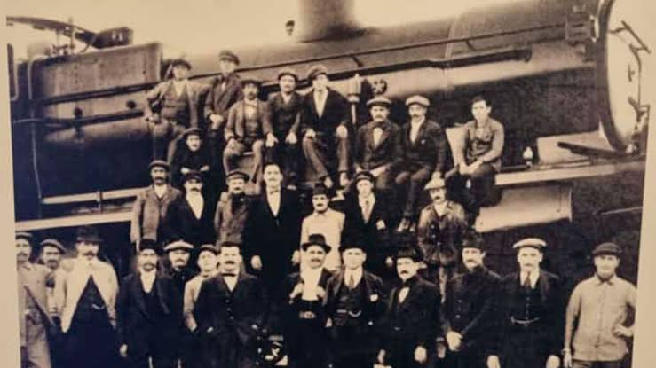
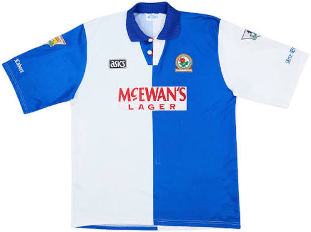

Historia de Talleres
El Club Atlético Talleres fue fundado en Córdoba el 12 de octubre de 1913 por obreros del Ferrocarril Central Córdoba, liderados por el inglés Tomás Lawson. Originalmente llamado Atlético Talleres Central Córdoba, adoptó de forma definitiva sus tradicionales colores azul y blanco a bastones verticales en 1915.
¿Por que son tan importantes los ferrocarriles en su historia?

Los propios trabajadores ferroviarios fundaron la institución para tener un espacio de esparcimiento. Esta profunda conexión quedó grabada para siempre en la mística del club, no solo a través de su nombre original, sino también en su apodo más famoso, "El Matador", que originalmente hacía referencia al ímpetu y la fuerza de la "maquinaria" ferroviaria.
¿Por que se decidieron utilizar los colores azul y blanco?

La elección definitiva de los colores azul y blanco se decidió a principios de 1915 como un homenaje directo al Blackburn Rovers de Inglaterra. El fundador y primer presidente del club, el inmigrante inglés Tomás Lawson, había jugado en esa institución británica antes de emigrar a Argentina y quiso replicar su identidad.
¿Por que es considerado el mas grande del interior?
El Club Atlético Talleres es sumamente conocido por ser el más convocante del interior del país y el único club cordobés con un título internacional oficial (la Copa Conmebol 1999). Su prestigio nacional nació en los años 70, cuando deslumbró al fútbol argentino y aportó tres jugadores clave a la Selección campeona del mundo en 1978.